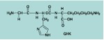

History of Copper and Wound Healing
Copper is an essential trace element which has been known to be in living tissue for more than 200 years. Even before it was know to play an integral role in the human body, ancient cultures, such as the Egyptians, used copper for water sterilization, headaches, trembling of the limbs (likely seizures or Parkinson’s like symptoms), burns, and itching (1). Copper was also used in the Roman Empire to treat many ailments including intestinal worms, chronic ulcers, and ear infections (1). The Aztecs and nomadic Mongolian tribes also used copper for medicinal purposes (1). In the 19th century, copper’s medical potency was first observed during the outbreak of cholera, in Paris, in 1832, when copper workers were found to be immune to cholera (1). Other early medicinal applications of copper typically involved the treatment of painful joints and muscles using copper bracelets, or copper-containing ointments. In the 20th and 21st centuries, copper is found in dietary vitamins, and has been used to treat chronic wounds, tuberculosis, burns, rheumatic fever, rheumatoid arthritis, sciatica, seizures, and as a supplement for general disease prevention (1). Scientific studies have clearly defined a role for copper in the regulation of growth, development, and function in Human and animal bodies. Copper is utilized by almost every cell in the human body, resulting in the intracellular formation of copper-dependent enzymes, such as, cytochrome c oxidase (energy production), superoxide dismutase (antioxidation), lysyl oxidase (crosslinking of elastin and collagen matrix),and dopamine beta hydroxylase (catecholamine formation) (2).
Copper’s Wound Healing Complex
In the 1970's, scientists isolated a sequence of amino acids (glycyl-L-histidyl-L-lysine; GHK) which is a Cu binding peptide in humans (3) (see structure of GHK below). GHK is a tripeptide with an affinity for copper (II) ions, that when bound, forms the GHK- Cu(II) complex. Although used to treat a variety of modern day diseases, copper is especially known for its complex role in wound healing promotion. In human plasma and wound areas, GHK exists as a mixture of GHK and GHK-Cu(II). GHK has a high binding affinity for copper (II) (pK=16.2) (3). However, under physiological conditions, only about 5% to 20% of GHK molecules exist as GHK-Cu(II) complexes with copper (II) (3).
The structure of GHK is very similar to that of common drugs used to treat ulcers (3):

The structure of common anti-ulcer drugs (3):

Structure of GHK-Cu(II) complex (7):

Many Mechanisms of Action
There are four distinct but overlapping stages of wound healing: hemostasis, inflammation, proliferation, and remodeling (2). Copper peptide activity begins almost immediately following injury, during the inflammatory stage. Mast cells, which are immune cells located in the skin, secrete GHK which binds biologically available Cu(II), thereby increasing GHK-Cu(II) concentrations in the wound area. In general, copper promotes healing via two pathways. First, GHK-Cu(II) protects tissue by acting as an anti-inflammatory agent that limits oxidative damage after tissue injury and by suppressing local inflammatory signals (i.e. cytokine IL-1) (2). Secondly, GHK-Cu(II) acts as an activator that signals the removal of damaged tissue and promotes insertion of healthy tissue (2). Thus, copper is unusual in that it is an anti-inflammatory agent that unlike most anti-inflammatory agents (i.e. ibuprofen) does not disrupt wound healing and actually promotes cleaner, faster, and better wound closure.
There is a large data base of studies which supports the role of copper in wound healing in vivo and in vitro. In dogs with paw pad injuries, local injections of tripeptide-copper in the first week following injury result in wounds which healed faster and have higher collagen contents than control animals (4). The images below illustrate the increased presence and organization of fibroblasts (extracellular matrix/collagen producing cells) in rat tissue 14 days following GHK-Cu treatment (5).
Control tissue (5):

GHK-Cu(II) treated tissue (5):

In vitro studies have begun to elucidate cellular mechanisms by which GHK-Cu(II) promotes wound healing (2, 6). Keratinocytes are the major cell type of the epidermis. Integrins are a family of cell surface receptors present on keratinocytes which allow for keratinocyte signaling and interaction with other cells and extracellular matrix. Specifically, for wound healing, keratinocyte integrins facilitate cells to cell and cell to the extracellular matrix attachment necessary for epidermal repair. Cellular studies have shown that copper can alter the complement of keratinocyte integrin expression during the re-epithelization and remodeling phases of healing (6). It is thought that this is one of many mechanisms by which copper modulates healing signals to improve wound healing. Although complex, it is clear that copper plays an essential role in cellular mechanisms of homeostasis and repair, and that wound treatments involving copper therapy can be effective in improving healing time and quality.
Note: Exposure to high concentrations of copper can cause illness. For more information on the toxicology of Copper please click following link. http://www.atsdr.cdc.gov/toxprofiles/tp132.pdf
References
(1) Image source
(2) Image source
(3) Image source
(4) Swaim SF., Vaughn DM., Kincaid SA., Morrison NE., Murray SS., Woodhead MA., Hoffman CE., Wright JC., Kammerman JR. Effect of locally injected medications on the healing of pad wounds in dogs. Am Vet Res. 57 (3), 394-399 (1996).
(5) Maquart FX., Bellon G., Chaqour B., Wegrowski J., Patt LM., Trachy RE., Monboisse JC., Chastang. F, Birembaut P., Gillery P., Borel JP. In vivo stimulation of connective tissue accumulation by the tripeptide-copper complex glycyl-L-histidyl-L-lysine-Cu2+ in rat experimental wounds. J Clin Invest. 92, 2368-2376 (1993).
(6) Tenaud I., Sainte-Marie I., Jumbou O., Litoux P., Dreno B. In vitro modulation of keratinocyte wound healing integrins by zinc, copper and manganese. Br J Dermatol. 140, 26-34 (1999).
(7) Image source
Author: Rebecca Reddaway
- Alzheimer's 1 2
- Antibiotics
- Antifouling Paint
- Arthritis
- Ayurvedic Medicine
- Breast Feeding
- Cancer Therapy
- Cattle Feed
- Cerebral Ischemia
- Chelation Therapy
- Chernobyl
- Chicken Feed
- Chocolate
- Cigarettes
- Coal 1 2
- Copper Mining
- Cremation
- Diabetes
- Electronic Waste
- Hat Making
- Hard Metal Disease
- Hybrid Cars
- Imaging 1 2 3 4
- Industrial Pollution
- Jewelry Allergy
- Lead Poisoning
- Lewisite
- Magnetic Particles
- Makeup
- Mountain Top Removal
- MRI Imaging
- Neurotoxicity
- Nuclear Power
- Nuclear Weapons
- Ouch Ouch Disease
- Peripheral Neuropathy
- PET Imaging
- Photodynamic Therapy
- Phytoremediation
- Pregnancy
- Radioactivity 1 2
- Seafood
- Sunscreens
- Tattoos
- Vaccines
- Wound Healing